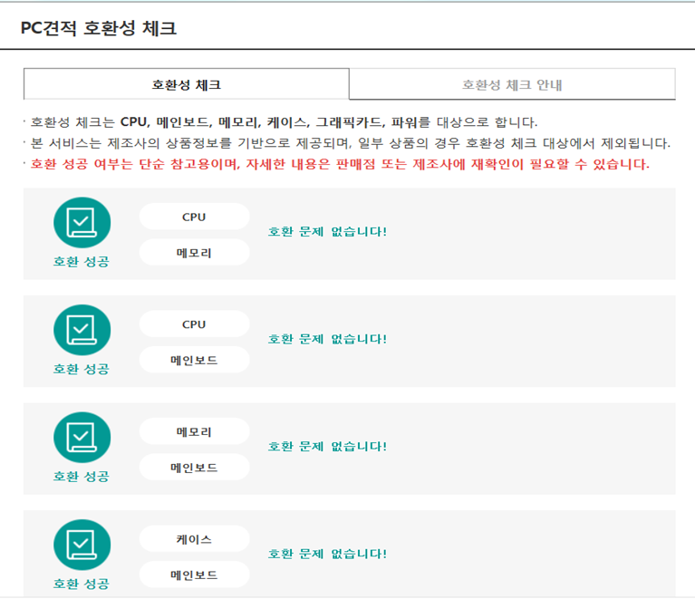
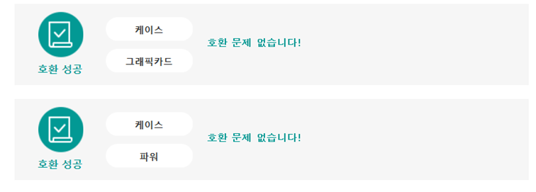

가상 컴퓨터 조립
CPU+쿨러:인텔 코어 i5-8세대 8500 (커피레이크) 벌크+쿨러
가격:275,450원
메인보드:MSI H310M PRO-VD PLUS
가격:70,620원
메모리:삼성전자 DDR4 4+8G-21300B
가격:79,430원
그래픽 카드:ZOTAC 지포스 GTX1050 Ti MINi D5 4GB
가격:181,480원
SSD,HDD:마이크론 Crucial BX500 아스크텍(120GB), Toshiba 500GB P300DT01ACA050 (SATA3/7200/64M)
가격:72,120원
케이스:대양케이스 ENIX USB 3.0 풀 아크릴 화이트
가격:33,000원
파워:잘만 EcoMax 500W 83+
가격:29,160원
키보드:로지텍 K120 New 키보드(정품)
가격:9,450원
마우스:MARVO 프로게이밍 마우스 G901
가격:24,150원
스피커:Britz 브리츠인터내셔널 BZ-SP600X Curved Soundbar(블랙)
가격:36,620원
모니터:뷰소닉 VX2458 리얼 144 게이밍 무결점
가격:249,210원
OS:마이크로소프트 Windows 10 Home 처음사용자용
가격:175,000원
총합:1,234,690원
호환성 테스트

